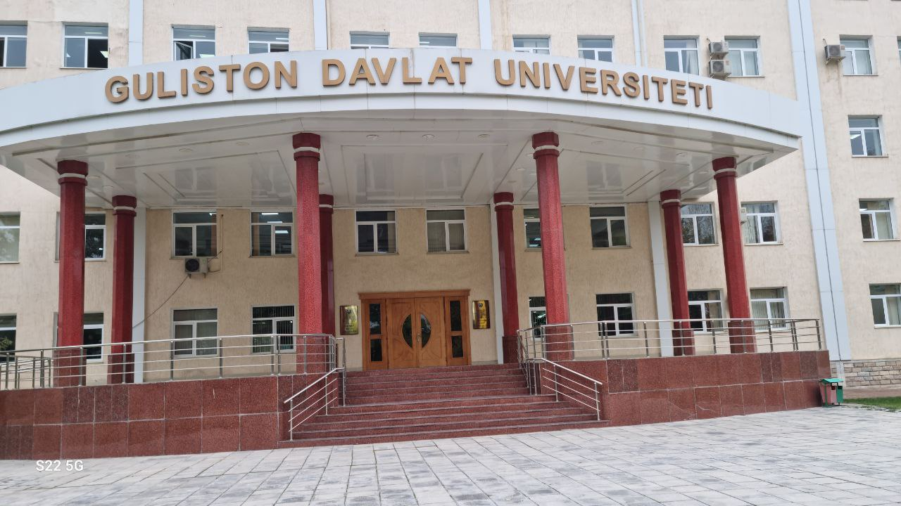

Universitet ma'lumot
Universitet qoshida 2 akademik litsey va malaka oshirish instituti, bosmaxona ham bor. Gazeta va jurnallar nashr etadi. Instituternet asosida 10 dan ortiq rivojlangan mamlakatlarning ilmiy markaz va oʻquv yurtlari bilan aloqa qiladi.